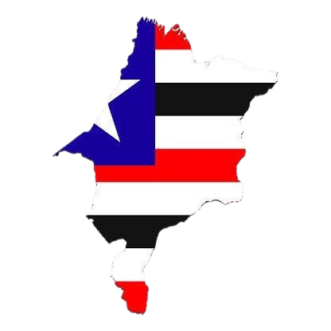
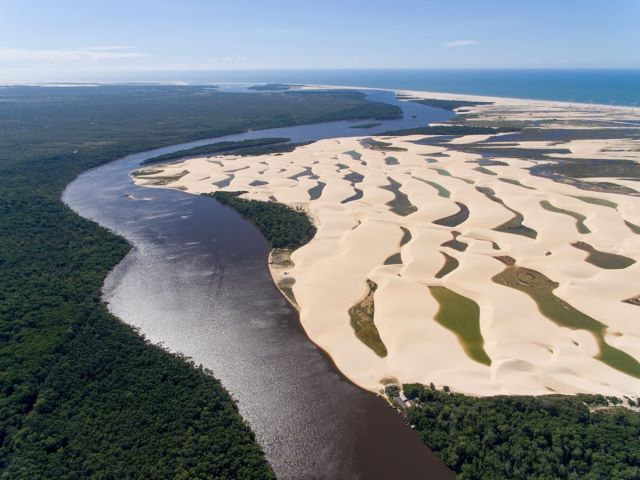
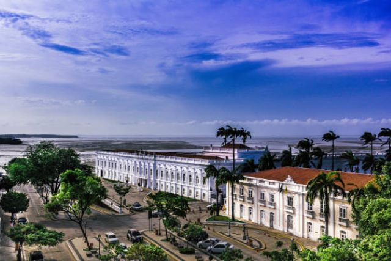
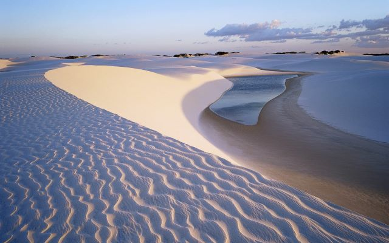
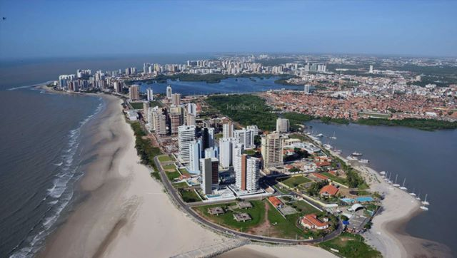

Bem-vindos ao Maranhão!
Conhecer o Maranhão é vivenciar momentos únicos durante o ano todo. Aqui a vida acontece! O Maranhão espera por você!
Conheça um pouco do nosso Maranhão!
"O Maranhão é um estado brasileiro situado na região Nordeste do Brasil. O seu território foi objeto de disputa entre diversos povos europeus, sendo que os portugueses mantiveram o domínio da região. A cultura maranhense é resultado da influência das populações que ocuparam o estado ao longo da sua colonização. A sua capital, São Luís, possui um centro histórico muito conservado. A população maranhense está concentrada no litoral e nas cidades médias do interior do estado."
Vista Aérea do Rio Preguiça em Barreirinhas e parte da vegetação típica do Maranhão 
Vista Aérea do Centro Histórico em São Luís 
Vista do Parque Nacional Dos Lençois Maranhenses 
Vista Aérea do Litoral de São Luís 
Conheça nossos pontos turísticos!
Quem vai conhecer o estado precisa começar pela capital. São Luís fica localizado em uma ilha, mas é muito conhecido pelo seu Centro Histórico. Conhecido como a Cidade dos Azulejos, leva esse nome por todos os azulejos espalhados por todos os lugares, principalmente os que são do século 18 e 19. Portanto, o centro histórico não pode ficar de fora do roteiro de viagens, principalmente pelas atrações culturais disponíveis.
 Parque Nacional dos Lençóis Maranhenses
Parque Nacional dos Lençóis Maranhenses
O Parque Nacional dos Lençóis Maranhenses é uma área protegida na costa atlântica norte do Brasil. É conhecido pela sua vasta paisagem desértica de grandes dunas de areia branca e pelas lagoas sazonais de água da chuva. A Lagoa Azul e a Lagoa Bonita são duas das maiores lagoas. O ecossistema diversificado do parque inclui pântanos de mangais. As cidades vizinhas de Barreirinhas e Santo Amaro do Maranhão servem de porta de entrada para o parque.
Outro Parque Nacional que está presente no estado e merece ser visitado é a Chapada das Mesas. Também está entre os principais pontos turísticos do Maranhão, e é um dos melhores destinos para quem curte paisagens naturais. O local fica no sul do estado, e a área abrange muitos territórios diferentes, pegando parte dos municípios de Riachão, Carolina e Estreito. O Riachão é muito bonito de visitar, com águas cristalinas e calmas, um verdadeiro paraíso.
A região de Delta do Parnaíba fica na divisa entre o estado do Maranhão e do Piauí. Embora a maior parte fique no Maranhão, do lado do Piauí existem mais opções de passeios. Contudo, os destinos turísticos maranhenses, não deixam a desejar. A Rota das Emoções é o passeio mais importante, combinando a visita nos Lençóis Maranhenses, Jericoacoara e Delta do Parnaíba. Unindo os estados do Maranhão, Ceará e Piauí.